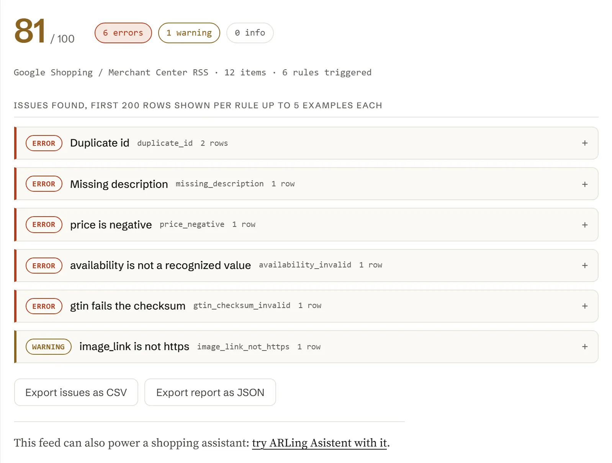

Product Feed Doctor:finden Sie, was in IhremShopping-Feed nicht stimmt,bevor Google, Metaoder Ihr KI-Assistent es entdeckt
Fügen Sie eine Feed-URL ein, fügen Sie den Feed-Inhalt ein oder laden Sie die Datei hoch: Google Shopping/Merchant Center RSS, ein Facebook/Meta-Katalog-CSV, Shopify /products.json, WooCommerce Store API JSON, ein allgemeiner XML-Feed oder einfaches CSV. Sie erhalten einen Score von maximal 100 Punkten, einen Bericht Regel für Regel und die genauen Zeilen zum Korrigieren, alles in Ihrem Browser.
- 31 geprüfte Regeln
- 6 Feed-Formate
- 0 €, ohne Konto
- nichts wird hochgeladen

01
Feed prüfen
Alles unten läuft in Ihrem Browser. Fügen Sie eine Feed-URL ein und klicken Sie auf Abrufen, fügen Sie den Feed-Inhalt direkt ein, laden Sie die heruntergeladene Datei hoch oder laden Sie das eingebaute Beispiel, um zu sehen, wie ein Bericht aussieht.
02
31 Regeln, jede mit einem Schweregrad und einer Lösung in einer Zeile.
Jede Regel unten hat eine stabile ID, einen Schweregrad (error, warning oder info) und, wo es zutrifft, das Feld der Merchant-Center-Produktdatenspezifikation, das sie prüft. Diese Tabelle wird direkt aus feed-doctor.js erzeugt, sie weicht also nie von dem ab, was das Werkzeug tatsächlich ausführt.
| Schweregrad | Regel-ID | Feld | Was geprüft wird |
|---|
03
Die sechs Probleme, die in fast jedem Feed auftauchen.
Die meisten Feeds scheitern an einer kleinen, immer gleichen Gruppe von Fehlern. Hier steht, woher jeder Fehler kommt und wie Sie ihn am schnellsten beheben.
-
HTML ist im Feld description stehen geblieben.
Shopify's body_html und das WooCommerce-Feld description enthalten beide rohes Markup. Entfernen Sie die Tags vor dem Export oder schicken Sie das Feld durch einen Klartext-Konverter; description sollte sich wie Fließtext lesen, nicht wie Markup.
-
Verfügbarkeit als Freitext geschrieben.
"Available", "In Stock!", "2 left" und Ähnliches werden nicht erkannt. Ordnen Sie Ihren Lagerstatus genau einem der Werte in stock, out of stock, preorder or backorder vor dem Export zu.
-
Preis ohne Währung.
"19.99" allein ist mehrdeutig. Exportieren Sie price immer als Betrag zusammen mit einem ISO-Währungscode, z. B. 19.99 USD, und achten Sie darauf, dass sale_price dieselbe Währung verwendet und niedriger ist als price.
-
Eine vertippte oder kopierte GTIN.
Eine einzelne vertauschte Ziffer sieht auf den ersten Blick richtig aus, scheitert aber an der Prüfziffer. Scannen oder kopieren Sie den Barcode lieber erneut von der Produktverpackung oder aus dem Datenblatt Ihres Lieferanten, statt ihn von Hand abzutippen.
-
Varianten ohne Größe oder Farbe.
If item_group_id fasst Varianten zusammen, aber jede Zeile braucht trotzdem eigene Werte in size und/oder color (oder einem anderen Unterscheidungsmerkmal), sonst können Google und Meta die Varianten im Bericht oder in der Anzeige nicht auseinanderhalten.
-
Doppelte IDs nach einem erneuten Export.
Eine Migration oder ein Plattformwechsel verwendet IDs oft erneut oder setzt sie auf eine Zeilennummer zurück, die sich über Kategorien hinweg wiederholt. id muss über die gesamte Lebensdauer des Artikels eindeutig sein; wenn Sie eine SKU wiederverwenden müssen, stellen Sie ihr je Quelle ein Präfix voran.
04
Machen Sie aus Ihrem Feed einen Einkaufsassistenten
Sobald Ihr Feed sauber ist, können dieselben Produktdaten einen Chat-Assistenten in Ihrem Shop betreiben, der Fragen wie "gibt es das auch in Blau" oder "was ist unter 30 Euro auf Lager" aus Ihrem echten Katalog beantwortet.
ARLing Asistent liest Ihren Produktdatenfeed und beantwortet Kundenfragen in Ihrem Shop, in Ihrer Sprache, ohne dass Sie Ihren Katalog umschreiben müssen.
ARLing Asistent ansehen05
Eine Funktion. Feed-Text rein, Bericht raus.
Kein Server, kein API-Schlüssel, keine Registrierung. feed-doctor.js ist reines JavaScript: lesen Sie es, forken Sie es oder führen Sie es in eigenen Skripten oder in Ihrer CI aus.
import { analyze } from './feed-doctor.js'; // or, loaded globally: const { analyze } = window.FeedDoctor; const report = analyze(feedText); // report { "format": "google_rss" | "facebook_csv" | "generic_csv" | "shopify_json" | "woocommerce_json" | "generic_xml", "productCount": 12, "score": 0-100, "counts": { error, warning, info }, "rules": [ { id, severity, spec, title, count, examples } … ], "problems": // only the triggered rules, sorted by severity "issues": // first 200 individual issues, one row per problem "truncated": true | false }
Alles läuft im Browser. Das Werkzeug oben ruft genau diese Funktion in Ihrem Browser auf. Es gibt kein Backend, keinen API-Schlüssel und keine Anfrage, die Ihren Feed irgendwohin überträgt (die einzige Ausnahme ist das Abrufen einer URL, die Sie einfügen: diese URL ruft Ihr Browser direkt auf).
Es erkennt das Format am Inhalt selbst, bringt jede Zeile in eine einheitliche Produktform (id, title, description, link, image_link, price, currency, availability, brand, gtin, mpn, condition, google_product_category, item_group_id, sale_price, shipping) und wendet alle 31 Regeln auf jede Zeile an.
06
Kostenlos.
Kein Konto, keine Zahlung, kein Nutzungslimit: Es läuft als statische Seite in Ihrem Browser, es gibt also keinen Server, für den Kosten anfallen.
Sagen Sie mir Bescheid, wenn ein neues Werkzeug erscheint. Nur neue Werkzeuge. Kein Newsletter, keine Weitergabe. Antworten Sie auf eine beliebige Mail, um sich abzumelden.
Danke. Sie hören nur von uns, wenn etwas Neues live ist.
Konnte nicht gespeichert werden. Schreiben Sie an andrej@arling.sk.
07
Fragen, die Leute wirklich suchen.
Direkte Antworten auf dieselben Fragen zum Produktdatenfeed, die dieses Werkzeug prüft, für den Fall, dass Sie nur die Antwort brauchen und nicht den Checker.
Welche Feed-Formate unterstützt Product Feed Doctor?
Google Shopping / Merchant Center RSS 2.0 im Namensraum-Format g: mit oder ohne atom:link Tag, dazu ein Facebook/Meta-Katalog-CSV, der Export /products.json von Shopify, eine WooCommerce-Store-API-JSON-Antwort, ein allgemeiner XML-Feed aus sich wiederholenden <item> Elementen mit unterschiedlichen Tag-Namen und ein einfaches CSV mit Kopfzeile. Das Format wird automatisch aus dem Inhalt erkannt, den Sie einfügen, hochladen oder abrufen; Sie müssen nie angeben, welches Sie verwenden.
Lädt dieses Werkzeug meinen Feed oder meine Produktdaten irgendwohin hoch?
Nein. Das Parsen und jede Prüfung laufen vollständig in Ihrem Browser, in feed-doctor.js. Wenn Sie eine Feed-URL einfügen und auf Abrufen klicken, holt Ihr Browser diese URL direkt; die Antwort läuft über keinen ARLing-Server. Eingefügter Text, eine hochgeladene Datei und der Bericht werden nirgendwohin gesendet. Lesen Sie feed-doctor.js direkt, oder schauen Sie zur Kontrolle in den Netzwerk-Tab Ihres Browsers.
Warum schlägt das direkte Abrufen meiner Feed-URL fehl?
Die meisten Shop-Plattformen und CDNs senden bei ihren Feed-URLs den Header Access-Control-Allow-Origin nicht, denn diese Dateien sollen von Googles oder Metas Servern heruntergeladen und nicht von JavaScript gelesen werden, das auf einer anderen Website läuft. Wenn das passiert, blockiert der Browser die Antwort, bevor diese Seite sie überhaupt sieht: Das ist normales CORS-Verhalten, kein Fehler dieses Werkzeugs. Fügen Sie stattdessen den Feed-Inhalt ein oder laden Sie die heruntergeladene Datei hoch; beides umgeht den Abruf im Browser vollständig und analysiert genau denselben Inhalt.
Was zählt in einem Google-Shopping-Feed als Pflichtfeld?
Die Merchant-Center-Produktdatenspezifikation behandelt id, title, description, link, image_link, price und availability als Pflichtfelder für praktisch jeden Artikel und condition als Pflichtfeld, sobald ein Artikel nicht neu ist (gebraucht, generalüberholt und ähnlich). Dieses Werkzeug meldet all das als Fehler, wenn es fehlt oder leer ist, und prüft zusätzlich brand, gtin, mpn, item_group_id und shipping, die die Spezifikation in bestimmten Situationen verlangt (ein Markenprodukt, das eindeutig identifizierbar ist; Varianten, die unterschieden werden müssen, und so weiter).
Wie wird die GTIN-Prüfsumme validiert?
gtin wird nach dem GS1-Standardalgorithmus für die Prüfziffer mod 10 geprüft, den GTIN-8, GTIN-12 (UPC-A), GTIN-13 (EAN-13) und GTIN-14 verwenden: Nicht-Ziffern werden entfernt, die Länge muss eine dieser vier sein, und die letzte Ziffer muss (10 minus der Rest modulo 10 aus der gewichteten Summe der vorangehenden Ziffern, mit von rechts abwechselnden Gewichten 3 und 1) mod 10 ergeben. Eine gtin mit falscher Länge oder mit einer vertauschten oder vertippten Ziffer besteht diese Prüfung nicht und wird mit genau dem eingelesenen Wert gemeldet.
Worauf beruht der Score von maximal 100 Punkten?
Das ist eine einfache, dokumentierte Heuristik, keine Zahl, die Google, Meta oder eine andere Plattform veröffentlicht: Start bei 100, dann 3 Punkte Abzug pro Fehler, 1 Punkt pro Warnung und 0,2 Punkte pro Info über den ganzen Feed hinweg, danach nach unten bei 0 begrenzt und auf die nächste ganze Zahl gerundet. Der Score soll ein schnelles Gefühl dafür geben, wie viel falsch ist und wie schwer es wiegt, nicht die Freigabe des Feeds vorhersagen; die Details, auf die es ankommt, stehen im Bericht Regel für Regel.
Was macht Feed Doctor Monitor?
Es ist ein optionales Add-on: Nach einer Analyse geben Sie ihm Ihre Feed-URL und Ihre E-Mail-Adresse, und ein Server prüft dieselben 31 Regeln nach Zeitplan (wöchentlich im Free-Plan, täglich im Pro-Plan) und schickt Ihnen eine E-Mail, wenn etwas schlechter geworden ist. Der Checker oben bleibt vollständig lokal in Ihrem Browser; der Monitor ist der einzige Teil von Feed Doctor, der Ihren Feed auf unserem Server abruft, und er ruft nur die URL ab, die Sie angegeben haben.
Ist Feed Doctor Monitor kostenlos?
Der Free-Plan umfasst einen Feed pro E-Mail-Adresse, eine wöchentliche Prüfung und eine Warnung, wenn eine neue Regel mit dem Schweregrad error auftaucht oder der Score um 5 Punkte oder mehr fällt. Pro kostet 9 EUR pro Monat und Feed: eine tägliche Prüfung, eine Warnung bei jeder Änderung und 90 Tage Score-Verlauf auf Ihrer Monitor-Seite. Abmelden können Sie sich mit einem Klick aus jeder Warn-E-Mail oder auf der Monitor-Seite.
Was speichert Feed Doctor Monitor über meinen Feed?
Ihre E-Mail-Adresse, die Feed-URL und das Ergebnis jeder Prüfung: den Score, die Anzahl der Fehler, Warnungen und Infos sowie welche Regel-IDs ausgelöst haben. Der Feed-Inhalt selbst wird nie gespeichert, Ihre Produkttitel, Preise und Beschreibungen liegen also nie auf unserem Server.